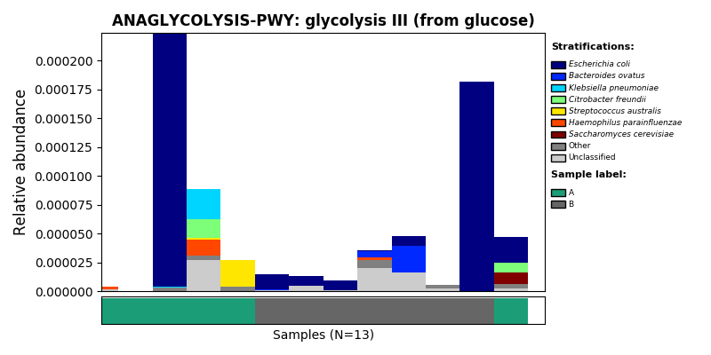
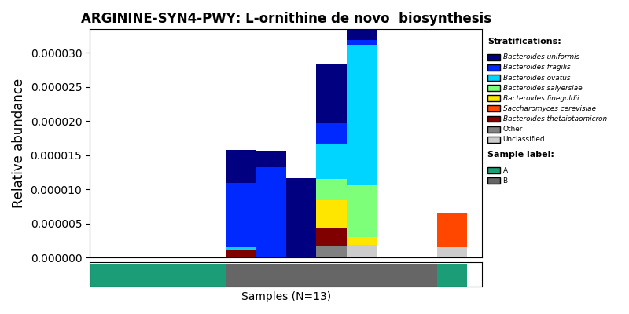
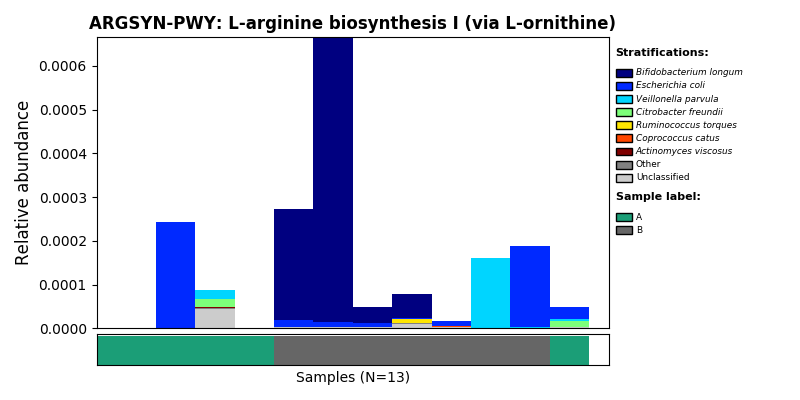
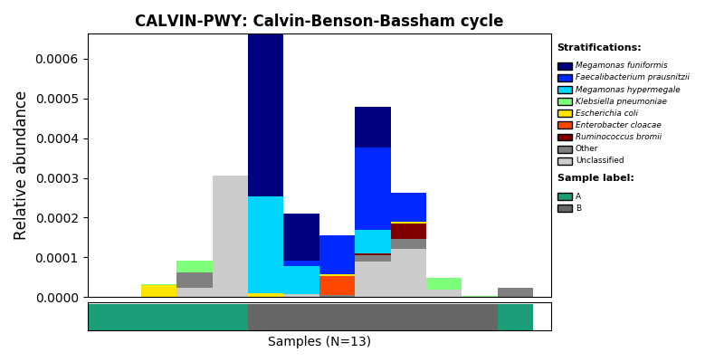
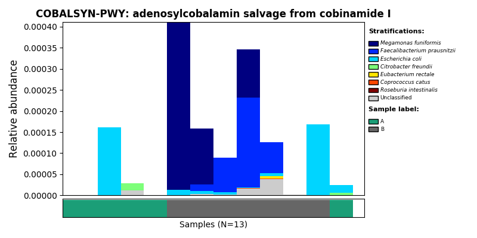

Chapter 2 Functional Analysis of Metacyc database
(This script was written in /share/projects/SOP/Functional_Analysis/github/Functional_analysis/ , all relative paths below are under this complete path.)
This demo provides guidance to standard data analysis of MetaCyc pathway data. Humman2 is used to annotate MGS reads with MetaCyc database.
FlowChart_MetaCyc
There are five 7 steps in this tutorial:
- Data loading
- Data Preprocess
- Beta diversity
- Permanova test
- Differential analysis
- Bacteria contribution to pathway
- Map Reaction(enzyme) and gene to pathway
2.1 Environment setup
In this chunk, required packages and functions would be loaded.
knitr::opts_chunk$set(warning = FALSE, message = FALSE)
## Remove all libraries and variables in current environment
rm(list = ls())
## Load packages
library(XMAS)
library(xviz)
library(data.table)
library(plotly)
library(xlsx)
library(magrittr)
## Load functions
source("./RScripts/permanova.R")
source("./RScripts/pathway2gene.R")
source("./RScripts/ultility.R")2.2 Data loading
As described in the introduction chapter, a cohort containing 13 samples of 6 patients in GvHD project would be used as demo data in this Chapter.
Read metadata:
Read MetaCyc metadata from Demo folder.
metadata <- read.table("./Demodata/MetaCyc/metadata.txt",header = TRUE,stringsAsFactors = FALSE) %>%
mutate(seqid2 = seqid) %>% # keep seqid in the metadata
column_to_rownames("seqid2")
dim(metadata)## [1] 13 2## seqid Group
## 4371 4371 A
## 4368 4368 A
## 4416 4416 A
## 4367 4367 A
## 4373 4373 A
## 4372 4372 ARead metaphlan2 profile table:
Read MetaCyc profile table from Demo folder.
pathwaydata <- read_delim("./Demodata/MetaCyc/merged_relab_pathabundance_unstratified.tsv", delim = "\t") %>%
mutate(`# Pathway` = str_split_fixed(`# Pathway`, ":", 2)[,1]) %>% # do not edit
column_to_rownames("# Pathway") %>% # do not edit
t() %>% as.data.frame() %>% # do not edit
rownames_to_column("seq_id") %>% # do not edit
mutate(seq_id=str_extract(seq_id, "\\d{4}")) %>% # do not edit
filter(seq_id %in% metadata$seqid) %>% # *** only keep samples in metadata, edit if needed ***
column_to_rownames("seq_id") %>% # do not edit
t() %>% as.data.frame() %>% # do not edit
rownames_to_column("pathway") %>% # do not edit
filter(rowSums(.[,-1]) > 0) %>% # do not edit
column_to_rownames("pathway") # do not edit
dim(pathwaydata)## [1] 431 132.3 Data preprocess
Transforming data
In this chunk, we use TSS (Total sum scaling) to eliminate the influence of sequencing depth on samples.
rescaled_pathwaydata <- pathwaydata %>% apply(., 2, function(x) x/sum(x)) %>% as.data.frame()
dim(rescaled_pathwaydata)## [1] 431 13Remove unppaed pathways
Note: you need to transform your data into relative abundance before running this chunk!!
rescaled_pathway.clean <- rescaled_pathwaydata %>%
rownames_to_column("pathway") %>%
filter(!pathway %in% c("UNMAPPED","UNINTEGRATED")) %>%
column_to_rownames("pathway")
dim(rescaled_pathway.clean)## [1] 429 13Aggregate low abundance data
In this chunck, we aggregate low abundance features to one row. Notably, you need to transform and remove unmapped entries in your data before running this chunk!!
1e-12 is an empirical threshold fot filtering low abundance feature. According to published paper Obese Individuals with and without Type 2 Diabetes Show Different Gut Microbial Functional Capacity and Composition
pathway with top 50% mean abundance and top 50% variance are left. But in MaAsLin2，pathway with abundance less than 10-10 are filtered by default.
pathway.clean <- aggregate_low_abundance(input_data = rescaled_pathway.clean,
threshold = 1e-12) ## threshold should be modified based on your on study
dim(pathway.clean)## [1] 429 132.4 Plot Beta diversity
In this demo, we plot PCoA with Bray-Curtis distance as example.
plot_beta_diversity is a fucntion in XVIZ working on calculating the beta diversity distance and visualzing output. Input of plot_beta_diversity should be a phyloseq object.
phyloseq(otu_table(pathway.clean, taxa_are_rows = T), sample_data(metadata)) %>%
plot_beta_diversity(feature = "Group",add_pc1 = TRUE, add_pc2 = TRUE)
2.5 Permanova test
run_permanova_betadisp is a function in XMAS working on doing dispersion test and PERMANOVA test.
The first output is dispersion test and the second output is PERMANOVA test.
phyloseq(otu_table(pathway.clean, taxa_are_rows = T), sample_data(metadata)) %>%
run_permanova_betadisp(vars = "Group")## $betadisp_res
## variable p_value analysis
## 1 Group 0.101 beta_dispersion_permutation999
##
## $permanova_res
## variable p_value R2 analysis
## 1 Group 0.157 0.1082203 permanova_permutation9992.6 Differential analysis(DA)
Filter low prevalence pathway
In this chunk, we would remove pathways apperaing in less than max(2 , 5% of samples) from data set before doing analysis. Remember to run all three chunks in data preprocessing section before running this chunk!
pathway.filter <- XMAS::filter_prevalence(otu_table = pathway.clean,
metadata = metadata.clean,
threshold = 0.05,
taxa_are_rows = TRUE)
dim(pathway.clean)## [1] 429 13## [1] 367 13LefSE
Remember to filter_prevalance in the chunk above before running this chunk!
da_pathway = phyloseq(otu_table(pathway.filter, taxa_are_rows = T), sample_data(metadata)) %>%
lefse_mgs(compvar = "Group") %>%
.$DA_features
da_pathway$id %<>% str_replace_all("_","-")2.7 Bacteria contributing to differential pathways
options(stringsAsFactors = FALSE)
pathway_stratified <- read_delim("./Demodata/MetaCyc/merged_relab_pathabundance_stratified.pcl", delim = "\t") %>%
column_to_rownames("pathwayID") %>%
t() %>%
as.data.frame() %>%
rownames_to_column("seq_id") %>%
mutate(seq_id=str_extract(seq_id, "\\d{4}")) %>%
filter(seq_id %in% metadata$seqid) %>%
column_to_rownames("seq_id") %>%
t() %>%
as.data.frame() %>%
.[apply(.>0, 1, any),] %>%
# .[apply(.>0,1, function(x) sum(x) > 4),] %>%
rownames_to_column("pathwayID") %>%
mutate(PathwayID=str_split_fixed(pathwayID,":",2)[,1]) %>%
mutate(Introduce=str_split_fixed(str_split_fixed(pathwayID,":",2)[,2],"\\|",2)[,1]) %>%
mutate(Genus=str_split_fixed(str_split_fixed(pathwayID,"\\|",2)[,2], "\\.", 2)[,1]) %>%
mutate(Species=str_split_fixed(str_split_fixed(pathwayID,"\\|",2)[,2], "\\.", 2)[,2]) %>%
mutate(Species=str_replace(Species, "s__", ""))
pathway_list <- pathway_stratified %>% as.data.frame() %>%
dplyr::select(PathwayID, Species) %>%
filter((!str_detect(PathwayID, "UNINTEGRATED")) & (PathwayID %in% da_pathway$id) & Species!="") %>%
pivot_wider(names_from = "Species",values_from = "Species") %>%
column_to_rownames("PathwayID") %>% .[apply(.,1,function(x) sum(!is.na(x))) >= 2,] %>%
rownames()
read_delim("./Demodata/MetaCyc/merged_relab_pathabundance_stratified.tsv", delim = "\t") %>%
column_to_rownames("# Pathway") %>%
t() %>%
as.data.frame() %>%
rownames_to_column("seqid") %>%
mutate(seqid=str_extract(seqid, "\\d{4}")) %>%
merge(metadata,., by="seqid") %>%
filter(seqid %in% metadata$seqid) %>%
column_to_rownames("seqid") %>%
t() %>%
as.data.frame() %>%
rownames_to_column("pathwayID") %>%
write.table(.,"./output/MetaCyc/merged_relab_pathabundance_stratified.pcl", row.names = FALSE, quote = FALSE, sep = "\t")
for (i in pathway_list) {
commond_text <- "python3.5 ~/tongbangzhuo_Xbiome1/Script/humann2_barplot.py --input ./output/MetaCyc/merged_relab_pathabundance_stratified.pcl --focal-feature ${pathwayID} --focal-metadatum Group --last-metadatum Group -d 8 4 --output output/MetaCyc/${pathwayID}.png -e 0.8"
commond_text <- stringr::str_interp(commond_text, list(pathwayID = i))
system(commond_text)
}2.8 Plot Bacteria contribution
image_path <- NULL
image_path <- system('ls ./output/MetaCyc/*PWY*png', intern = TRUE) %>% unlist() %>% as.character() %>% as.vector() %>% .[1:5]
## In the graph(s) below, green KO are those KOs enriched in GroupB, red KO are those KOs enriched in GroupA
knitr::include_graphics(image_path)
2.9 Gene and Ensyme involed in differential pathways
load tables to mapping pathway to gene and enzyme
# gene family
my_genefamily = read.table("./Demodata/MetaCyc/all.genefamilies.tsv",sep="\t")
my_genefamily_unstratified = my_genefamily %>% filter(!str_detect(V1,"[|]"))
metacyc_pwy_name = read_delim("./Demodata/MetaCyc/map_metacyc-pwy_name.txt",delim = "\t",col_names = FALSE)Mapping pathway to related gene and reaction
cur_path = 1
append_option = TRUE
da_pathway_gene_full_list = list()
for(i in 1:length(pathway_list)){
pathway_gene_result = pathway2gene(pathway_list[i])
if(is.null(pathway_gene_result)){
cur_path = cur_path+1
next()
}
else{
pathway_gene_result = pathway_gene_result %>% dplyr::filter(genefamily %in% my_genefamily$V1)
if(cur_path == 1){
append_option = FALSE
}
if(cur_path > 1){
append_option = TRUE
}
da_pathway_gene_full_list[[pathway_list[i]]] = pathway_gene_result
cur_path = cur_path + 1
}
}Show the result of one of the differential pathways for example:
## reaction genefamily
## 1 RXN-15513 UniRef90_A0A010ZHV5
## 2 RXN-15513 UniRef90_A3N0J2
## 3 RXN-15513 UniRef90_A6L1K6
## 4 RXN-15513 UniRef90_A6L9K8
## 5 GAPOXNPHOSPHN-RXN UniRef90_A0A024L2B0
## 6 GAPOXNPHOSPHN-RXN UniRef90_A0A024L2Z22.10 Session info
## ─ Session info ─────────────────────────────────────────────────────────────────────────────────────────────────────────────────────────────────────────────────────────────────────────
## setting value
## version R version 3.6.3 (2020-02-29)
## os Ubuntu 16.04.7 LTS
## system x86_64, linux-gnu
## ui RStudio
## language (EN)
## collate en_IN.UTF-8
## ctype en_IN.UTF-8
## tz Asia/Hong_Kong
## date 2022-09-02
## rstudio 1.1.419 (server)
## pandoc 2.7.3 @ /usr/bin/ (via rmarkdown)
##
## ─ Packages ─────────────────────────────────────────────────────────────────────────────────────────────────────────────────────────────────────────────────────────────────────────────
## ! package * version date (UTC) lib source
## abind 1.4-5 2016-07-21 [1] CRAN (R 3.6.3)
## ade4 1.7-17 2021-06-17 [1] CRAN (R 3.6.3)
## ALDEx2 1.18.0 2019-10-29 [1] Bioconductor
## annotate 1.64.0 2019-10-29 [1] Bioconductor
## AnnotationDbi 1.48.0 2019-10-29 [1] Bioconductor
## ape 5.5 2021-04-25 [1] CRAN (R 3.6.3)
## assertthat 0.2.1 2019-03-21 [2] CRAN (R 3.6.3)
## backports 1.4.1 2021-12-13 [1] CRAN (R 3.6.3)
## base64enc 0.1-3 2015-07-28 [2] CRAN (R 3.6.3)
## bayesm 3.1-4 2019-10-15 [1] CRAN (R 3.6.3)
## biglm 0.9-2.1 2020-11-27 [1] CRAN (R 3.6.3)
## Biobase * 2.46.0 2019-10-29 [2] Bioconductor
## BiocGenerics * 0.32.0 2019-10-29 [2] Bioconductor
## BiocParallel * 1.20.1 2019-12-21 [2] Bioconductor
## biomformat 1.14.0 2019-10-29 [1] Bioconductor
## Biostrings 2.54.0 2019-10-29 [1] Bioconductor
## bit 4.0.4 2020-08-04 [1] CRAN (R 3.6.3)
## bit64 4.0.5 2020-08-30 [1] CRAN (R 3.6.3)
## bitops 1.0-7 2021-04-24 [1] CRAN (R 3.6.3)
## blob 1.2.2 2021-07-23 [1] CRAN (R 3.6.3)
## bookdown 0.24 2021-09-02 [1] CRAN (R 3.6.3)
## brio 1.1.3 2021-11-30 [2] CRAN (R 3.6.3)
## broom 0.7.12 2022-01-28 [1] CRAN (R 3.6.3)
## bslib 0.3.1 2021-10-06 [1] CRAN (R 3.6.3)
## cachem 1.0.5 2021-05-15 [1] CRAN (R 3.6.3)
## callr 3.7.0 2021-04-20 [2] CRAN (R 3.6.3)
## car 3.0-12 2021-11-06 [1] CRAN (R 3.6.3)
## carData 3.0-4 2020-05-22 [1] CRAN (R 3.6.3)
## caTools 1.18.2 2021-03-28 [1] CRAN (R 3.6.3)
## cellranger 1.1.0 2016-07-27 [1] CRAN (R 3.6.3)
## checkmate 2.0.0 2020-02-06 [1] CRAN (R 3.6.3)
## circlize * 0.4.13 2021-06-09 [1] CRAN (R 3.6.3)
## cli 3.1.0 2021-10-27 [1] CRAN (R 3.6.3)
## clue 0.3-59 2021-04-16 [1] CRAN (R 3.6.3)
## cluster 2.1.0 2019-06-19 [2] CRAN (R 3.6.3)
## codetools 0.2-16 2018-12-24 [2] CRAN (R 3.6.3)
## coin 1.4-2 2021-10-08 [1] CRAN (R 3.6.3)
## colorspace 2.0-2 2021-06-24 [1] CRAN (R 3.6.3)
## ComplexHeatmap * 2.2.0 2019-10-29 [1] Bioconductor
## compositions 2.0-2 2021-07-14 [1] CRAN (R 3.6.3)
## cowplot * 1.1.1 2020-12-30 [1] CRAN (R 3.6.3)
## crayon 1.5.0 2022-02-14 [1] CRAN (R 3.6.3)
## dada2 * 1.14.1 2020-02-22 [1] Bioconductor
## data.table * 1.14.0 2021-02-21 [1] CRAN (R 3.6.3)
## DBI 1.1.1 2021-01-15 [1] CRAN (R 3.6.3)
## dbplyr 2.1.1 2021-04-06 [1] CRAN (R 3.6.3)
## DelayedArray * 0.12.3 2020-04-09 [2] Bioconductor
## DelayedMatrixStats 1.8.0 2019-10-29 [1] Bioconductor
## DEoptimR 1.0-9 2021-05-24 [1] CRAN (R 3.6.3)
## desc 1.4.1 2022-03-06 [2] CRAN (R 3.6.3)
## DESeq2 * 1.26.0 2019-10-29 [1] Bioconductor
## devtools 2.4.3 2021-11-30 [1] CRAN (R 3.6.3)
## digest 0.6.29 2021-12-01 [1] CRAN (R 3.6.3)
## dplyr * 1.0.6 2021-05-05 [1] CRAN (R 3.6.3)
## edgeR 3.28.1 2020-02-26 [1] Bioconductor
## ellipsis 0.3.2 2021-04-29 [1] CRAN (R 3.6.3)
## EnhancedVolcano * 1.4.0 2019-10-29 [1] Bioconductor
## evaluate 0.15 2022-02-18 [2] CRAN (R 3.6.3)
## fansi 1.0.2 2022-01-14 [1] CRAN (R 3.6.3)
## farver 2.1.0 2021-02-28 [2] CRAN (R 3.6.3)
## fastmap 1.1.0 2021-01-25 [1] CRAN (R 3.6.3)
## fdrtool 1.2.17 2021-11-13 [1] CRAN (R 3.6.3)
## forcats * 0.5.1 2021-01-27 [1] CRAN (R 3.6.3)
## foreach 1.5.2 2022-02-02 [2] CRAN (R 3.6.3)
## foreign 0.8-75 2020-01-20 [2] CRAN (R 3.6.3)
## formatR 1.12 2022-03-31 [2] CRAN (R 3.6.3)
## Formula 1.2-4 2020-10-16 [1] CRAN (R 3.6.3)
## fs 1.5.2 2021-12-08 [1] CRAN (R 3.6.3)
## futile.logger 1.4.3 2016-07-10 [2] CRAN (R 3.6.3)
## futile.options 1.0.1 2018-04-20 [2] CRAN (R 3.6.3)
## genefilter 1.68.0 2019-10-29 [1] Bioconductor
## geneplotter 1.64.0 2019-10-29 [1] Bioconductor
## generics 0.1.2 2022-01-31 [1] CRAN (R 3.6.3)
## GenomeInfoDb * 1.22.1 2020-03-27 [2] Bioconductor
## GenomeInfoDbData 1.2.2 2020-08-24 [2] Bioconductor
## GenomicAlignments 1.22.1 2019-11-12 [1] Bioconductor
## GenomicRanges * 1.38.0 2019-10-29 [2] Bioconductor
## getopt 1.20.3 2019-03-22 [1] CRAN (R 3.6.3)
## GetoptLong 1.0.5 2020-12-15 [1] CRAN (R 3.6.3)
## ggExtra * 0.9 2019-08-27 [1] CRAN (R 3.6.3)
## ggplot2 * 3.3.5 2021-06-25 [1] CRAN (R 3.6.3)
## ggpubr * 0.4.0 2020-06-27 [1] CRAN (R 3.6.3)
## ggrepel * 0.9.1 2021-01-15 [2] CRAN (R 3.6.3)
## ggsci * 2.9 2018-05-14 [1] CRAN (R 3.6.3)
## ggsignif 0.6.3 2021-09-09 [1] CRAN (R 3.6.3)
## glmnet 4.1-2 2021-06-24 [1] CRAN (R 3.6.3)
## GlobalOptions 0.1.2 2020-06-10 [1] CRAN (R 3.6.3)
## glue 1.6.1 2022-01-22 [1] CRAN (R 3.6.3)
## GMPR 0.1.3 2021-05-17 [1] local
## gplots 3.1.1 2020-11-28 [1] CRAN (R 3.6.3)
## gridExtra 2.3 2017-09-09 [2] CRAN (R 3.6.3)
## gtable 0.3.0 2019-03-25 [2] CRAN (R 3.6.3)
## gtools 3.9.2 2021-06-06 [1] CRAN (R 3.6.3)
## haven 2.4.1 2021-04-23 [1] CRAN (R 3.6.3)
## highr 0.9 2021-04-16 [1] CRAN (R 3.6.3)
## Hmisc 4.5-0 2021-02-28 [1] CRAN (R 3.6.3)
## hms 1.1.1 2021-09-26 [1] CRAN (R 3.6.3)
## htmlTable 2.3.0 2021-10-12 [1] CRAN (R 3.6.3)
## htmltools 0.5.2 2021-08-25 [1] CRAN (R 3.6.3)
## htmlwidgets 1.5.4 2021-09-08 [2] CRAN (R 3.6.3)
## httpuv 1.6.1 2021-05-07 [1] CRAN (R 3.6.3)
## httr 1.4.3 2022-05-04 [2] CRAN (R 3.6.3)
## hwriter 1.3.2 2014-09-10 [1] CRAN (R 3.6.3)
## igraph 1.3.1 2022-04-20 [2] CRAN (R 3.6.3)
## IHW 1.14.0 2019-10-29 [1] Bioconductor
## IRanges * 2.20.2 2020-01-13 [2] Bioconductor
## iterators 1.0.14 2022-02-05 [2] CRAN (R 3.6.3)
## jpeg 0.1-9 2021-07-24 [1] CRAN (R 3.6.3)
## jquerylib 0.1.4 2021-04-26 [1] CRAN (R 3.6.3)
## jsonlite 1.8.0 2022-02-22 [2] CRAN (R 3.6.3)
## KernSmooth 2.23-16 2019-10-15 [2] CRAN (R 3.6.3)
## knitr 1.36 2021-09-29 [1] CRAN (R 3.6.3)
## labeling 0.4.2 2020-10-20 [2] CRAN (R 3.6.3)
## lambda.r 1.2.4 2019-09-18 [2] CRAN (R 3.6.3)
## later 1.3.0 2021-08-18 [2] CRAN (R 3.6.3)
## lattice * 0.20-38 2018-11-04 [2] CRAN (R 3.6.3)
## latticeExtra 0.6-29 2019-12-19 [1] CRAN (R 3.6.3)
## lazyeval 0.2.2 2019-03-15 [2] CRAN (R 3.6.3)
## libcoin 1.0-9 2021-09-27 [1] CRAN (R 3.6.3)
## lifecycle 1.0.1 2021-09-24 [1] CRAN (R 3.6.3)
## limma 3.42.2 2020-02-03 [2] Bioconductor
## locfit 1.5-9.4 2020-03-25 [1] CRAN (R 3.6.3)
## lpsymphony 1.14.0 2019-10-29 [1] Bioconductor (R 3.6.3)
## lubridate 1.7.10 2021-02-26 [1] CRAN (R 3.6.3)
## Maaslin2 1.7.3 2022-03-23 [1] Github (biobakery/maaslin2@8d090e4)
## magrittr * 2.0.2 2022-01-26 [1] CRAN (R 3.6.3)
## MASS 7.3-54 2021-05-03 [1] CRAN (R 3.6.3)
## Matrix 1.3-4 2021-06-01 [1] CRAN (R 3.6.3)
## matrixStats * 0.60.0 2021-07-26 [1] CRAN (R 3.6.3)
## mbzinb 0.2 2021-06-23 [1] local
## memoise 2.0.1 2021-11-26 [2] CRAN (R 3.6.3)
## metagenomeSeq 1.28.2 2020-02-03 [1] Bioconductor
## metamicrobiomeR 1.1 2021-02-03 [1] local
## mgcv 1.8-31 2019-11-09 [2] CRAN (R 3.6.3)
## microbiome 1.8.0 2019-10-29 [1] Bioconductor
## mime 0.12 2021-09-28 [2] CRAN (R 3.6.3)
## miniUI 0.1.1.1 2018-05-18 [1] CRAN (R 3.6.3)
## modelr 0.1.8 2020-05-19 [1] CRAN (R 3.6.3)
## modeltools 0.2-23 2020-03-05 [1] CRAN (R 3.6.3)
## multcomp 1.4-17 2021-04-29 [1] CRAN (R 3.6.3)
## multtest 2.42.0 2019-10-29 [2] Bioconductor
## munsell 0.5.0 2018-06-12 [2] CRAN (R 3.6.3)
## mvtnorm 1.1-3 2021-10-08 [1] CRAN (R 3.6.3)
## nlme 3.1-144 2020-02-06 [2] CRAN (R 3.6.3)
## nnet 7.3-12 2016-02-02 [2] CRAN (R 3.6.3)
## optparse 1.7.1 2021-10-08 [1] CRAN (R 3.6.3)
## pcaPP 1.9-74 2021-04-23 [1] CRAN (R 3.6.3)
## permute * 0.9-5 2019-03-12 [1] CRAN (R 3.6.3)
## phyloseq * 1.30.0 2019-10-29 [1] Bioconductor
## pillar 1.7.0 2022-02-01 [1] CRAN (R 3.6.3)
## pkgbuild 1.3.1 2021-12-20 [2] CRAN (R 3.6.3)
## pkgconfig 2.0.3 2019-09-22 [2] CRAN (R 3.6.3)
## pkgload 1.2.4 2021-11-30 [2] CRAN (R 3.6.3)
## plotly * 4.10.0 2021-10-09 [1] CRAN (R 3.6.3)
## plyr 1.8.7 2022-03-24 [2] CRAN (R 3.6.3)
## png 0.1-7 2013-12-03 [1] CRAN (R 3.6.3)
## prettyunits 1.1.1 2020-01-24 [2] CRAN (R 3.6.3)
## processx 3.5.3 2022-03-25 [2] CRAN (R 3.6.3)
## promises 1.2.0.1 2021-02-11 [2] CRAN (R 3.6.3)
## protoclust 1.6.3 2019-01-31 [1] CRAN (R 3.6.3)
## ps 1.7.0 2022-04-23 [2] CRAN (R 3.6.3)
## pscl 1.5.5 2020-03-07 [1] CRAN (R 3.6.3)
## purrr * 0.3.4 2020-04-17 [2] CRAN (R 3.6.3)
## qvalue 2.18.0 2019-10-29 [1] Bioconductor
## R6 2.5.1 2021-08-19 [1] CRAN (R 3.6.3)
## RAIDA 1.0 2021-06-23 [1] local
## ranacapa 0.1.0 2021-06-18 [1] Github (gauravsk/ranacapa@58c0cab)
## RColorBrewer * 1.1-3 2022-04-03 [2] CRAN (R 3.6.3)
## Rcpp * 1.0.7 2021-07-07 [1] CRAN (R 3.6.3)
## RcppParallel 5.1.4 2021-05-04 [1] CRAN (R 3.6.3)
## RCurl 1.98-1.6 2022-02-08 [2] CRAN (R 3.6.3)
## readr * 2.0.0 2021-07-20 [1] CRAN (R 3.6.3)
## readxl * 1.3.1 2019-03-13 [1] CRAN (R 3.6.3)
## remotes 2.4.2 2021-11-30 [1] CRAN (R 3.6.3)
## reprex 2.0.1 2021-08-05 [1] CRAN (R 3.6.3)
## reshape2 * 1.4.4 2020-04-09 [2] CRAN (R 3.6.3)
## rhdf5 2.30.1 2019-11-26 [1] Bioconductor
## Rhdf5lib 1.8.0 2019-10-29 [1] Bioconductor
## rJava 1.0-5 2021-09-24 [1] CRAN (R 3.6.3)
## rjson 0.2.20 2018-06-08 [1] CRAN (R 3.6.3)
## R rlang 1.0.2 <NA> [2] <NA>
## rmarkdown 2.11 2021-09-14 [1] CRAN (R 3.6.3)
## robustbase 0.93-9 2021-09-27 [1] CRAN (R 3.6.3)
## rpart 4.1-15 2019-04-12 [2] CRAN (R 3.6.3)
## rprojroot 2.0.2 2020-11-15 [1] CRAN (R 3.6.3)
## Rsamtools 2.2.3 2020-02-23 [1] Bioconductor
## RSQLite 2.2.7 2021-04-22 [1] CRAN (R 3.6.3)
## rstatix 0.7.0 2021-02-13 [1] CRAN (R 3.6.3)
## rstudioapi 0.13 2020-11-12 [2] CRAN (R 3.6.3)
## Rtsne 0.15 2018-11-10 [1] CRAN (R 3.6.3)
## rvest 1.0.2 2021-10-16 [1] CRAN (R 3.6.3)
## S4Vectors * 0.24.4 2020-04-09 [2] Bioconductor
## sandwich 3.0-1 2021-05-18 [1] CRAN (R 3.6.3)
## sass 0.4.0 2021-05-12 [1] CRAN (R 3.6.3)
## scales 1.2.0 2022-04-13 [2] CRAN (R 3.6.3)
## seqinr * 4.2-8 2021-06-09 [1] CRAN (R 3.6.3)
## sessioninfo 1.2.2 2021-12-06 [2] CRAN (R 3.6.3)
## shape 1.4.6 2021-05-19 [1] CRAN (R 3.6.3)
## shiny 1.7.1 2021-10-02 [1] CRAN (R 3.6.3)
## ShortRead 1.44.3 2020-02-03 [1] Bioconductor
## slam 0.1-49 2021-11-17 [1] CRAN (R 3.6.3)
## stringi 1.7.4 2021-08-25 [1] CRAN (R 3.6.3)
## stringr * 1.4.0 2019-02-10 [2] CRAN (R 3.6.3)
## SummarizedExperiment * 1.16.1 2019-12-19 [2] Bioconductor
## survival 3.1-8 2019-12-03 [2] CRAN (R 3.6.3)
## tensorA 0.36.2 2020-11-19 [1] CRAN (R 3.6.3)
## testthat 3.1.4 2022-04-26 [2] CRAN (R 3.6.3)
## textshape 1.7.3 2021-05-28 [1] CRAN (R 3.6.3)
## TH.data 1.1-0 2021-09-27 [1] CRAN (R 3.6.3)
## tibble * 3.1.6 2021-11-07 [1] CRAN (R 3.6.3)
## tidyr * 1.2.0 2022-02-01 [1] CRAN (R 3.6.3)
## tidyselect 1.1.1 2021-04-30 [1] CRAN (R 3.6.3)
## tidyverse * 1.3.1 2021-04-15 [1] CRAN (R 3.6.3)
## tzdb 0.2.0 2021-10-27 [1] CRAN (R 3.6.3)
## UpSetR 1.4.0 2019-05-22 [1] CRAN (R 3.6.3)
## usethis 2.1.6 2022-05-25 [2] CRAN (R 3.6.3)
## utf8 1.2.2 2021-07-24 [1] CRAN (R 3.6.3)
## vctrs 0.3.8 2021-04-29 [1] CRAN (R 3.6.3)
## vegan * 2.5-7 2020-11-28 [1] CRAN (R 3.6.3)
## VennDiagram 1.7.1 2021-12-02 [1] CRAN (R 3.6.3)
## viridisLite 0.4.0 2021-04-13 [2] CRAN (R 3.6.3)
## vroom 1.5.7 2021-11-30 [1] CRAN (R 3.6.3)
## withr 2.4.3 2021-11-30 [1] CRAN (R 3.6.3)
## Wrench 1.4.0 2019-10-29 [1] Bioconductor
## xfun 0.23 2021-05-15 [1] CRAN (R 3.6.3)
## xlsx * 0.6.5 2020-11-10 [1] CRAN (R 3.6.3)
## xlsxjars 0.6.1 2014-08-22 [1] CRAN (R 3.6.3)
## XMAS * 0.0.0.9000 2022-03-23 [1] local
## XMAS2 2.1.7.7 2022-08-25 [2] local
## XML 3.99-0.3 2020-01-20 [1] CRAN (R 3.6.3)
## xml2 1.3.3 2021-11-30 [2] CRAN (R 3.6.3)
## xtable 1.8-4 2019-04-21 [1] CRAN (R 3.6.3)
## XVector 0.26.0 2019-10-29 [2] Bioconductor
## xviz * 1.1.0 2021-01-14 [1] local
## yaml 2.2.2 2022-01-25 [1] CRAN (R 3.6.3)
## zlibbioc 1.32.0 2019-10-29 [2] Bioconductor
## zoo 1.8-9 2021-03-09 [1] CRAN (R 3.6.3)
##
## [1] /share/home/tongbangzhuo/R/x86_64-pc-linux-gnu-library/3.6
## [2] /opt/R-3.6.3/lib/R/library
##
## R ── Package was removed from disk.
##
## ────────────────────────────────────────────────────────────────────────────────────────────────────────────────────────────────────────────────────────────────────────────────────────